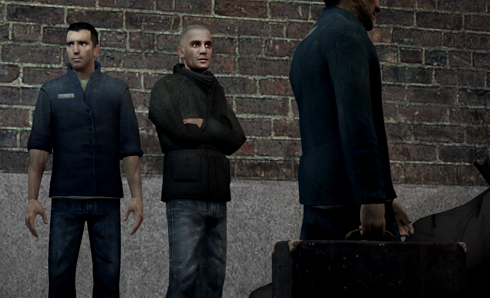

Cidadãos
Os cidadãos são os habitantes humanos oprimidos dos centros urbanos restantes sob o controle dos Combine.
Com quase nenhum direito garantido, eles frequentemente são transferidos entre cidades sem aviso prévio, seja para dificultar a formação de grupos de resistência organizada ou para evitar que se tornem confortáveis em seu ambiente.
O serviço público periódicamente coloca os cidadãos para trabalhar na produção, reparação e melhoria da cidade. Todos os cidadãos devem participar desses ciclos de trabalho para manter seu valor social, calculado por meio de Atos Cívicos Documentados. Esses atos são ganhos através de ações que contribuem para a estabilidade contínua da cidade, como relatar ameaças à Proteção Civil e participar dos ciclos de trabalho mencionados.
Emprego
Determinados cidadãos podem ser considerados aptos para trabalhos avançados de serviço público, sendo contratados pelo Ministério da Energia para manter os serviços básicos providos pelos Combine: suprimentos de gás, máquinas de venda automática e equipamentos de iluminação.
Esses cidadãos são selecionados de um grupo de candidatos com base nos seus Atos Cívicos Documentados, em entrevistas conduzidas por membros da Gestão Pública do Distrito 4. Este é outro empreendimento para colaboradores na cidade realizarem tarefas administrativas de baixo nível em nome do Ministério.
Atos Cívicos Documentados
Os Atos Cívicos Documentados são um dos principais mecanismos utilizados pela administração para avaliar e registrar o valor social de cada cidadão dentro da sociedade. Esses registros consistem em ações e comportamentos considerados exemplares ou alinhados com os interesses e diretrizes do regime Combine.
| FORÇA DE TRABALHO |
| Cidadãos |
|  |
| Os habitantes restantes sob o regime interino dos Combine, na maioria apenas desesperados para se manterem vivos e alimentados. |
A somatória desses atos forma uma métrica que determina o valor social de um indivíduo, influenciando diretamente diversos aspectos de sua vida. Entre eles estão o acesso a privilégios como autorização para habitar blocos residenciais mais seguros ou receber rações de maior qualidade.
Por outro lado, a realização de ações que violem as diretrizes estabelecidas pelo regime interino dos Combine pode acarretar deduções nos seus Atos Cívicos Documentados. Quando o saldo desses registros atinge níveis negativos, isso pode resultar na perda de direitos básicos, rebaixamento do status de cidadão e, reclassificação como elemento desestabilizador, uma condição que pode levar à execução como medida final.
Recompensas
Essas são as maneiras mais comuns de se ganhar Atos Cívicos Documentados:
- Denunciar infratores.
- Relatar contrabando.
- Participar ativamente de Ciclos de Trabalho.
- Cooperar com a Proteção Civil.
Importante: Tome cuidado ao relatar contrabando. Nunca pegue ou mova itens ilegais de lugar. Deixe-os onde estão e chame uma unidade imediatamente para que possam ser recolhidos e destruídos com segurança.
Deduções
Essas são as maneiras mais comuns de se perder Atos Cívicos Documentados:
- Falar de maneira não civilizada ou conversar nas ruas com outros cidadãos sem autorização.
- Desobedecer ordens diretas das autoridades.
- Vadiar ou permanecer em áreas sem propósito claro.
- Portar contrabando ou associar-se a itens ilegais.
- Realizar movimentos excessivos, como correr, pular ou agachar em locais não autorizados.
Manter o comportamento adequado e respeitar as diretrizes garante a preservação de seus ACD e, consequentemente, seus direitos e benefícios como cidadão.
Oportunidades Cívicas
Cidadãos têm a oportunidade de progredir na sociedade ao se candidatarem a diferentes funções e carreiras que contribuem diretamente para o funcionamento da comunidade. As opções incluem:
- Cargos na Gestão Pública: Trabalhe diretamente na administração e coordenação de operações essenciais da cidade.
- Licenças Comerciais: Obtenha autorização para operar estabelecimentos comerciais e oferecer bens ou serviços à população.
- Destacamento de Serviço Público Especializado: Participe de tarefas que envolvem reparos e a manutenção da cidade.
- Alistamento na Proteção Civil: Junte-se às forças de segurança e vigilância, ajudando a garantir a estabilidade e segurança da cidade.
Cada um desses cargos possui requisitos específicos de Atos Cívicos Documentados (ACD) para qualificação.
Nota: Para agendar uma entrevista e obter uma Licença Comercial, certifique-se de possuir 150 fichas. Este valor será utilizado para adquirir a licença, permitindo que você opere legalmente um estabelecimento comercial dentro da cidade.
Rotina
Rações
A distribuição de rações ocorre diariamente das 07:00 às 08:00. Durante esse período, é obrigatório que todos os cidadãos mantenham silêncio e permaneçam voltados para frente.
O descumprimento dessas regras resultará na perda do direito de receber a ração. Seja obediente, colabore com a ordem e garanta sua parte.
A maioria das rações fornecidas deve ser cozida antes do consumo. Utilize o fogão disponibilizado em seu apartamento para o preparo adequado.
As distribuições de rações estão sujeitas a cancelamento por diversos motivos, incluindo:
- Mudanças na estabilidade política local.
- Desordem ou comportamento inadequado nas filas.
- Outros fatores que comprometam a segurança ou a ordem pública.
Destacamento de Serviço Público Geral T-9423
O Destacamento de Serviço Público Geral T-9423 ou DSPT-9423 é um ciclo de trabalho que ocorre diariamente, das 10:00 às 16:00. É altamente recomendado que os cidadãos cheguem cedo para garantir seu lugar.
O ciclo consiste em diversas tarefas fundamentais para o funcionamento da sociedade, incluindo:
- Processamento e triagem de materiais.
- Separação e exportação de recursos.
Instruções para o DSPT-9423
Durante o ciclo, siga estas etapas cuidadosamente:
- Pegue um caixote do palete.
- Abra o caixote e dirija-se para a fila.
- Processe os materiais utilizando as máquinas providenciadas. Siga as instruções exibidas para evitar acidentes.
- Deposite os materiais processados nos compartimentos corretos, conforme indicado.
Diretrizes para o DSPT-9432
- Siga as ordens da equipe de proteção local
- Cada cidadão pode processar apenas um caixote por vez.
- Não acumule caixotes ou caixas, mantenha o fluxo organizado.
- Após concluir o processamento, lembre-se de retirar suas fichas fornecidas pelas máquinas.
Tempo livre
O período de tempo livre ocorre diariamente das 16:00 às 23:00. Durante esse intervalo, os cidadãos têm a liberdade de Circular pelas áreas públicas da cidade, Realizar compras e adquirir suprimentos essenciais, Permanecer em seus blocos residenciais, Participar de atividades recreativas permitidas e interagir de forma civilizada.
Este é um momento destinado ao descanso e à realização de tarefas pessoais, sempre dentro dos limites das normas estabelecidas. Aproveite esse horário para se reorganizar e manter-se produtivo dentro da comunidade.
Toque de Recolher
O Toque de Recolher tem início todos os dias às 23:00 e termina às 6:00 do dia seguinte. Durante esse período, é obrigatório que todos os cidadãos permaneçam em seus blocos residenciais, dentro de seus quartos, sem exceções.
Esse horário não é apenas uma medida de segurança, mas também uma oportunidade para os cidadãos descansarem adequadamente, garantindo sua saúde e capacidade de contribuir com a sociedade no dia seguinte. O Toque de Recolher é essencial para a manutenção da ordem e da tranquilidade, permitindo que as forças Combine realizem operações necessárias para proteger a comunidade e garantir sua estabilidade.
Cidadãos que violarem o Toque de Recolher estarão infringindo as diretrizes estabelecidas e serão acusados sob o Código 603 Entrada Ilegal.
Inspeção Comunitária
As Inspeções Comunitárias são medidas que são somente realizadas durante períodos de desestabilização do índice de estabilidade política. Quando uma inspeção é decretada, todos os cidadãos devem imediatamente dirigir-se aos seus blocos residenciais e permanecer dentro de seus quartos até que a operação seja concluída.
Essas inspeções são essenciais para restaurar a ordem e garantir a segurança da comunidade. Durante esse período, as forças Combine realizam verificações detalhadas em busca de possíveis irregularidades, elementos desestabilizadores ou ameaças ao equilíbrio social.
Durante uma Inspeção Comunitária, todos os cidadãos devem assumir a posição de revista. Isso inclui:
- Ficar de cara para a parede,
- Colocar as mãos na parede,
- Manter as pernas afastadas.
Cidadãos que não obedecerem às instruções durante a Inspeção Comunitária serão tratados como infratores e poderão sofrer as mesmas acusações aplicadas durante o Toque de Recolher, incluindo acusações sob o Código 603 Entrada Ilegal e/ou 507 Não-Complacência Pública.
Saúde
Seu personagem, assim como você, possui necessidades físicas e um estado mental que devem ser mantidos em equilíbrio. É importante garantir que ele esteja alimentado, em uma temperatura confortável, e evite realizar ações que você não faria na vida real.
Ações que podem melhorar sua sanidade:
- Permanecer próximo a fontes de calor, como fogueiras ou caldeiras.
- Refugiar-se dentro do bloco residencial.
- Estar perto de outras pessoas.
- Alimentar-se regularmente.
- Fumar cigarros para aliviar o estresse.
- Utilizar medicamentos anti-estresse.
- Vestir roupas limpas.
Ações que podem impactar negativamente sua sanidade:
- Permanecer em locais perigosos, como esgotos ou áreas insalubres.
- Estar próximo a criaturas hostis, como zumbis.
- Prolongar períodos de isolamento, evitando contato social.
- Expor-se a temperaturas extremas, enfrentando frio ou calor intensos.
- Passar longos períodos sem se alimentar.
- Usar roupas sujas.
Controles Importantes
F1: Abre o menu de informações.
F3: Abre o menu de reconhecimento e postura